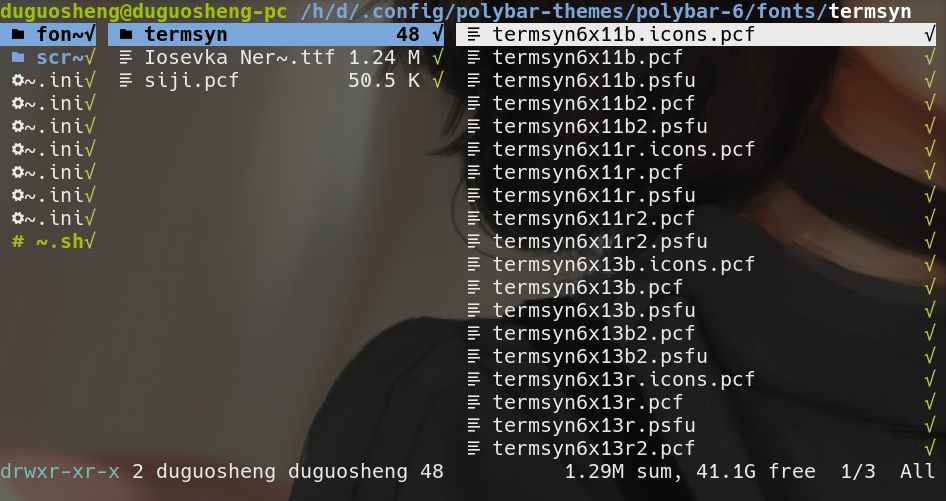

折腾了一天的
polybar主题，来记录一下
主题下载
- 首先，你已经下好了polybar
- 然后下载
polybar的主题1
2cd ~/.config
git clone https://github.com/adi1090x/polybar-themes.git
然后在
.config目录下就会有一个名为polybar-themes的文件夹
配置字体
- 就会看到一共九个主题，每个主题下都有一个名为
fonts的文件夹，想要使用哪个主题，先将主题的字体复制到你系统的字体文件夹下这个字体我搞了好长时间(大概一下午加晚上)，一直以为要自己下载，下载了还显示不出来，原来他自带，我….
1
2cd polybar-themes
ls -l
以polybar-6为例，它的字体目录如下

我的字体目录是/usr/share/fonts/，我的ttf尾缀的字体在/usr/share/fonts/TTF/下，所以我将ttf字体复制到这里面，然后termsyn是个字体文件夹，直接放在fonts目录下即可，siji放在/usr/share/fonts/misc/下
最后将原来的
~/.config/polybar/这个目录改个名字，如果不需备份的话直接删除就好了，然后我用的polybar-5
1 | cp -r ~/.config/polybar-themes/polybar-5 ~/.config/polybar |
接下来运行脚本
1 | cd ~/.config/polybar/ |
配置(polybar-5)
- 如果想更改标题栏顺序，可以在主题中
config.ini中修改
建议将[bar/top]下1
modules-left = menu title right-end-top left-end-bottom workspaces right-end-top left-end-bottom colors-switch right-end-top
改为
1 | modules-left = menu workspaces right-end-top left-end-bottom colors-switch right-end-top left-end-bottom title right-end-top |
用起来感觉好些
如果要更改左上角菜单栏中
Files，Terminal等的程序，可以在主题下user_modules.ini中[module/menu]下更改解决polybar显示不了中文
打开主题目录下config.ini，将1
font-0 = Iosevka Nerd Font:style=Medium:size=14;3
改为
1 | font-0 = unifont:style=Medium:size=14;3 |
当然也可以下载其他支持中文的字体
- 我用的
i3wm所以它的右上角powermenu菜单中logout用不了
首先下载i3exit
1 | sudo pacman -S i3exit |
然后更改主题文件夹下scripts/powermenu，将
1 | *Logout) openbox --exit ;; |
改为
1 | *Logout) i3exit logout ;; |